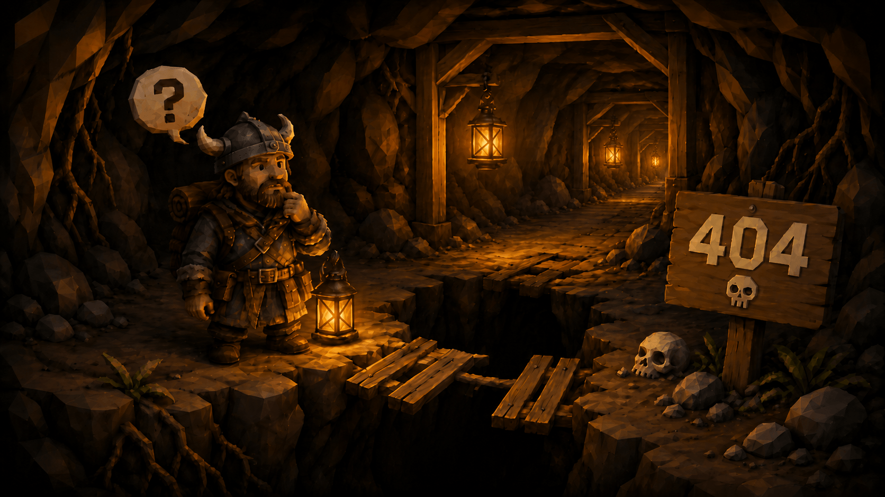

Lost in the deep
This tunnel caved in
The page you were digging for isn't here — the Maw may have gotten to it first. Grab your lantern and head back to solid ground.

The page you were digging for isn't here — the Maw may have gotten to it first. Grab your lantern and head back to solid ground.